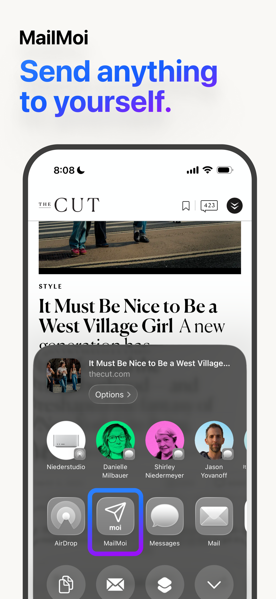
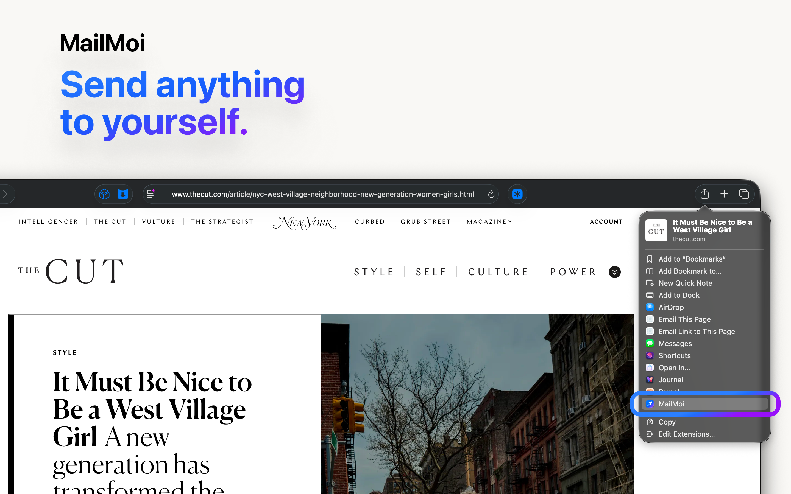
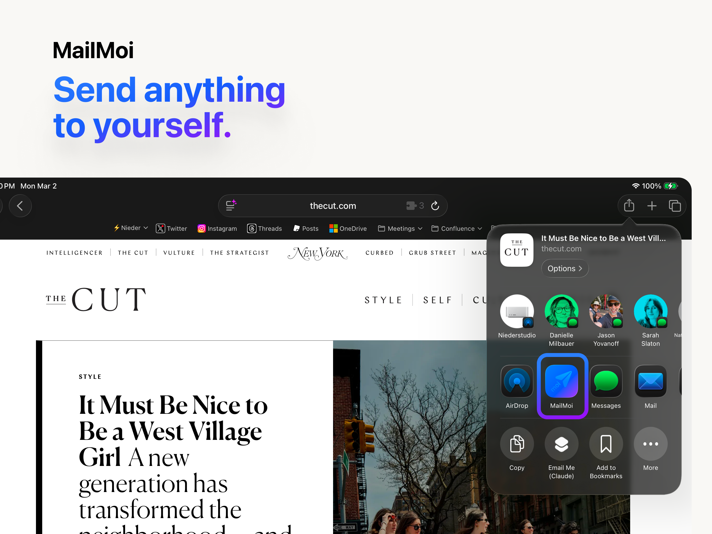

Context
SendMoi is a focused utility for one recurring behavior: saving what matters by sending it to your own inbox. The product had to stay intentionally narrow while still feeling production-grade and dependable.
Challenge
"Email this to myself later" is a tiny behavior, but the tooling around it is usually unreliable. The common flow breaks across app switches, weak connectivity, and inconsistent share-sheet payloads, leaving users to wonder whether the send actually happened.
SendMoi needed to make that habit feel dependable on iPhone, iPad, and macOS without turning into a full mail client. The product had to stay narrow, remove setup friction, and protect the send when the network or share extension could not finish immediately.
Strategy
- Queue-first delivery: treated every outbound message as durable work by saving it locally before network delivery, so failed sends could retry later instead of disappearing.
- Native share surface: built the Share Extension as a first-class part of the product, allowing links, text, images, and app-provided metadata to be captured where the user already is.
- Fast repeat use: simplified repeat workflows with Gmail OAuth, a default-recipient setting, and an optional auto-send path for the common "send this to myself" case.
- Content cleanup: normalized noisy share formats, improved metadata extraction, and rendered final emails as polished responsive cards instead of raw pasted links.
Outcome
The finished product behaves more like dependable infrastructure than a lightweight utility. Users can share once, dismiss the sheet quickly, and trust that SendMoi will either deliver immediately or preserve the send for retry when the app becomes active again or connectivity returns.
By keeping the scope intentionally tight, the app delivers a focused workflow across Apple platforms without requiring a custom backend, while still supporting richer email formatting, image-only shares, and clean state sharing between the main app and extension.
Key Learnings
Small utility products earn their value through trust. In SendMoi, technical decisions like App Group state sharing, queue persistence, and careful share-sheet behavior are directly felt in the product experience.
The project reinforced the value of a narrow brief handled rigorously: when the promise is simple and edge cases are respected, even a tiny workflow can feel essential.
Visuals


